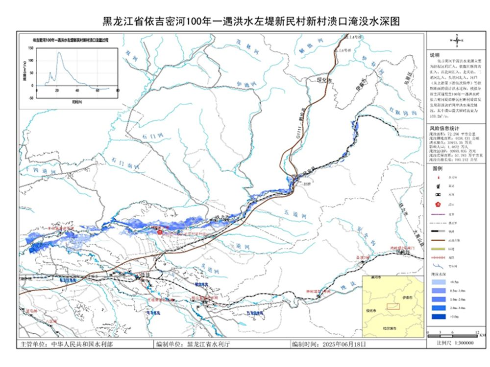
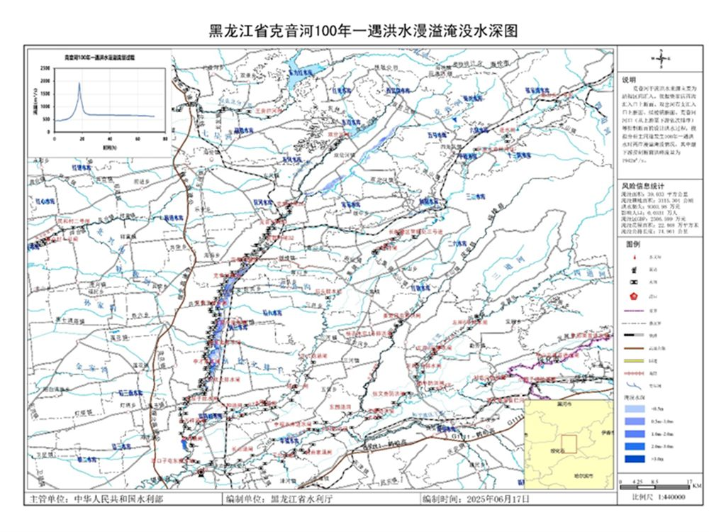
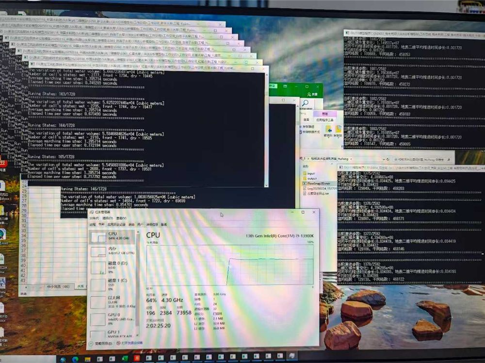
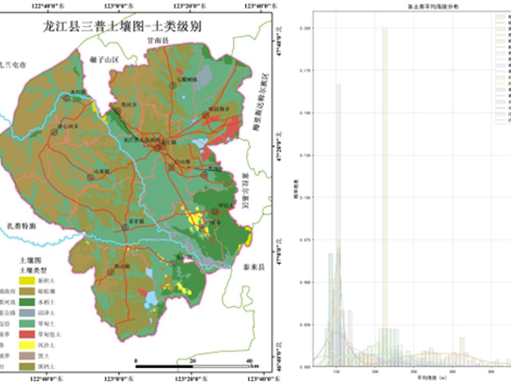
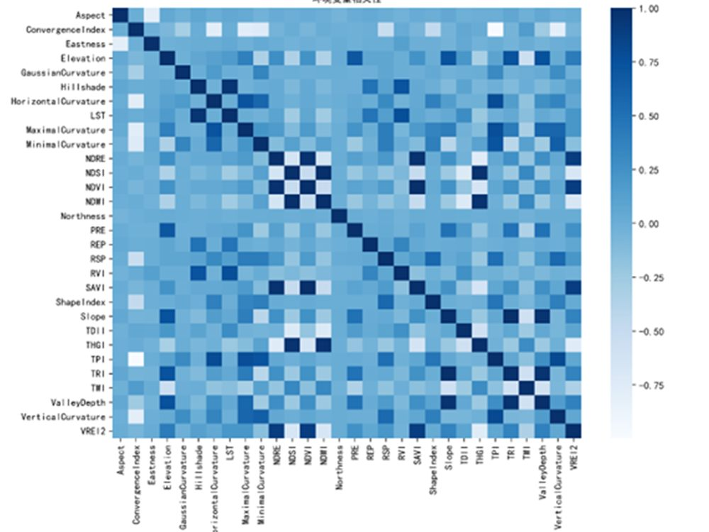
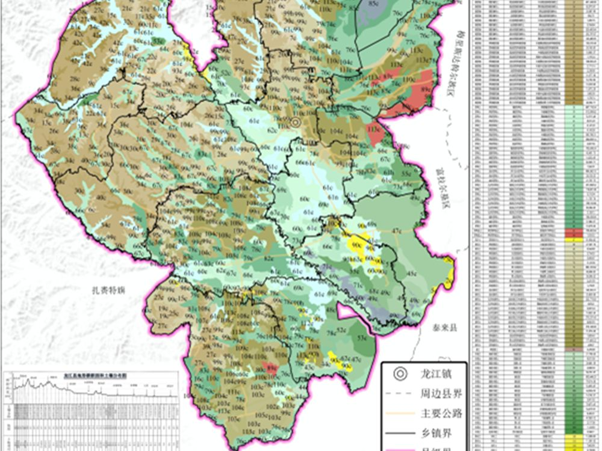

项目经历
参与项目简介与成果图件
硕士在读期间，先后于中国水利水电科学研究院抗旱减灾研究中心、中国科学院东北地理与农业生态研究所黑土地保护重点实验室 开展联合培养，深度参与两项国家级项目：全国洪水风险图绘制（黑龙江部分）与第三次全国土壤普查（龙江县单元）， 独立承担建模汇算、数据分析、图件设计与质量检查等核心环节，具备完整的国家级项目交付经验。
全国洪水风险图绘制（黑龙江部分）
中国水利水电科学研究院 · 抗旱减灾研究中心（联合培养）
主要承担黑龙江省齐齐哈尔市嫩江流域共 11 条支流（以支流为基本编制单元）的建模汇算、数据分析、 报告编制与图件设计等全流程工作；完成各支流洪水风险空间数据整理与计算，保障成果的规范性与精度要求， 项目成果直接服务于流域防洪减灾决策。
洪水风险制图
ArcGIS
水文建模汇算
图件设计
项目成果



第三次全国土壤普查（龙江县单元）
中国科学院东北地理与农业生态研究所 · 黑土地保护重点实验室（联合培养）
承担普查单元土壤类型部分的全流程工作，涵盖样点布设与数据整理、土壤类型识别与判定、 成果图件制作与质量检查等环节；同时参与黑土地保护专题研究，围绕土壤有机质/有机碳遥感数字制图 开展深度学习建模与精度评估，已形成系列科研成果。
土壤普查
样点布设
成果图件与质检
黑土地保护
项目成果


